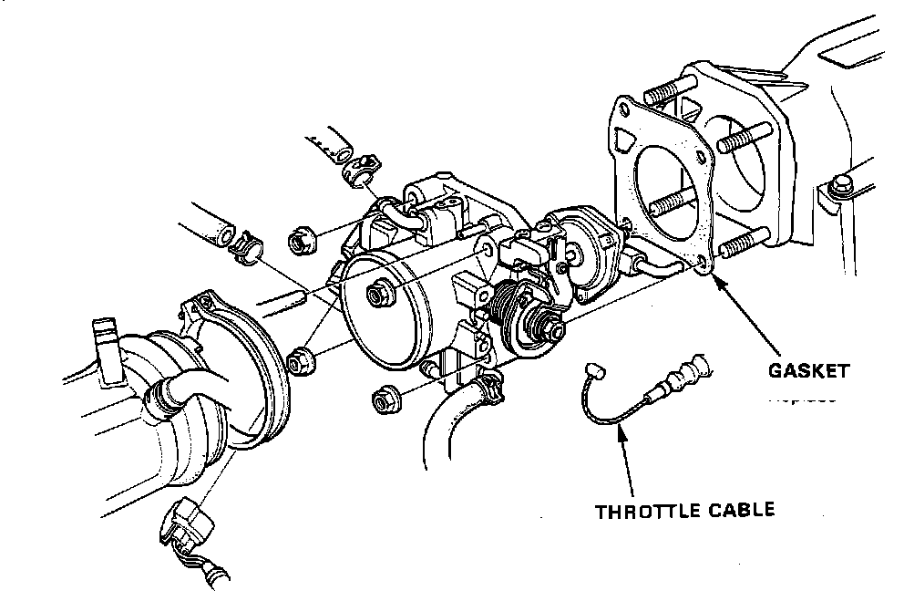

Throttle Body: Service and Repair
WARNING: Make sure engine is cool before removing throttle body as it is heated with engine coolant and may cause burns.Throttle Body Disassembly:

1. Remove air intake hose.
2. Remove the throttle cable and, on A/T equipped cars, the A/T throttle control cable.
3. Remove all vacuum hoses, coolant hoses, and electrical connectors from the Throttle Body assembly.
4. Remove the four 8mm nuts and remove the Throttle Body.
5. Replace Throttle Body gasket and reverse above procedure to reinstall.
6. Torque 8mm Throttle Body nuts to:
16 lb-ft (22 Nm)
7. After reassembly, adjust the throttle cable and, on A/T equipped cars, the A/T throttle control cable.
8. Check idle speed and dashpot for proper adjustment and operation. See "ADJUSTMENT PROCEDURES".
CAUTION: DO NOT attempt to adjust the throttle stop screw, it is non-adjustable.